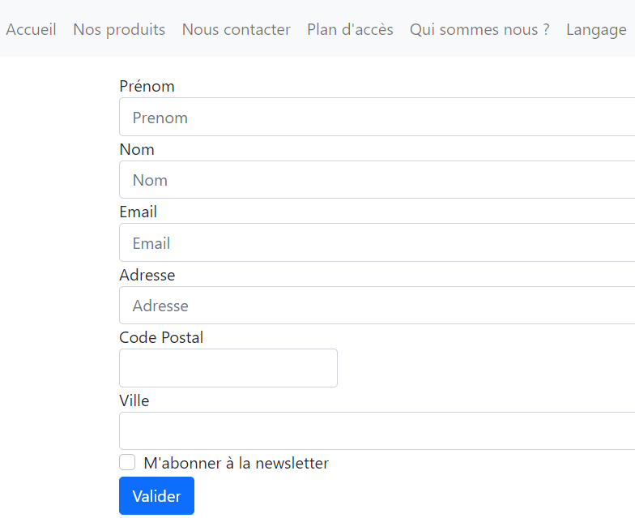

TP03 - Tableaux Associatifs, Boucles foreach (3/6)
Objectif
Vous allez associer des pages au menu. Vous n'allez pas encore utiliser l'exemple du TP précédent,
pour éviter des erreurs au lancement. Ce TP sera utilisé pour la partie MVC.
Attention
Ne remplissez pas le rapport sur votre navigateur , vous ne pourrez pas le sauvegarder.
Téléchargez le sur votre disque dur !
Prérequis
Avant de commencer
Attention
Vérifiez bien que vous êtes en UTF8.
Exercice 1 - Découpage du fichier TPMenu.php
Afin d'avoir une organisation modulaire, vous allez découper ce fichier en trois parties :
- un fichier model
- un fichier entête,
- un fichier navigation,
- un fichier pied.
Avec cette présentation modulaire, vous pourrez plus facilement intégrer des pages liées au menu.
Dans un premier temps créer un fichier PHP nommé TPModel.php, dans lequel nous mettrons toutes nos données.
<?php
//Déclaration de variables
$lang = array();
$menu01 = ['accueil' => 'accueil',
'nos produits' => 'produits',
'nous contacter' => 'contact',
'plan d\'accès' => 'acces',
'qui sommes nous ?' => 'nous',
'langage' => 'Français'];
$menu02 = ['home', 'products', 'contacts us', 'find Us', 'about us', 'language'];
$form01 = 'Valider';
$form02 = 'Sign in';
$lang = $menu01;
Vous allez maintenant créer le fichier qui contiendra l'en-tête HTML : TPEntete.php
<!doctype html>
<head lang="fr">
<head>
<!-- Required meta tags -->
<meta charset="utf-8"/>
<meta name="viewport" content="width=device-width, initial-scale=1">
<!-- Bootstrap CSS -->
<link href="https://cdn.jsdelivr.net/npm/bootstrap@5.0.0-beta2/dist/css/bootstrap.min.css" rel="stylesheet"
integrity="sha384-BmbxuPwQa2lc/FVzBcNJ7UAyJxM6wuqIj61tLrc4wSX0szH/Ev+nYRRuWlolflfl"
crossorigin="anonymous">
<title><?= basename(__File__) ?></title>
</head>
<body>
Vous allez ensuite créer un fichier de navigation nommé TPNav.php
<nav class="navbar navbar-expand-lg navbar-light bg-light">
<ul class="navbar-nav">
<?php foreach ($lang as $cle => $valeur): ?>
<li class="nav-item">
<a class="nav-link" href="<?=$valeur;?>"><?php echo ucfirst($cle);?></a>
</li>
<?php endforeach;//fin de la boucle ?>
</ul>
</nav>
<nav class="bd-subnavbar py-2" aria-label="Secondary navigation"></nav>
Enfin, vous allez créer le fichier de pied de page TPPied.php
<!-- Option 1: Bootstrap Bundle with Popper -->
<script src="https://cdn.jsdelivr.net/npm/bootstrap@5.0.0-beta2/dist/js/bootstrap.bundle.min.js" integrity="sha384-b5kHyXgcpbZJO/tY9Ul7kGkf1S0CWuKcCD38l8YkeH8z8QjE0GmW1gYU5S9FOnJ0" crossorigin="anonymous"></script>
</body>
</html>
Résultat
Pour l'instant il n'est pas possible d'obtenir un résultat global, car aucun fichiers n'est lié entre eux.
Exercice 2 - Création des principales pages de votre mini site
A - Création de la page Accueil
Vous allez créer la page TPAccueil.php en y copiant le code suivant :
<?php
include 'TPModel.php';
include 'TPEntete.php';
include 'TPNav.php'; ?>
<div class="container">
<div class="bg-light row align-items-center">
<div class="col">
<h1 class="display-4">Ceci est la page d'accueil!</h1>
<p class="lead">Vous allez suivre les TP pour faire un petit site php</p>
<hr class="my-4">
<p>Nous allons utiliser différentes techniques pour améliorer la programmation de ce site.</p>
<a class="btn btn-primary btn-lg" href="#" role="button">Learn more</a>
</div>
</div>
</div>
<?php include 'TPPied.php'; ?>
Résultat
Lorsque vous lancez la page TPAccueil.php, vous obtenez la page suivante :
En vous aidant de la documentation php répondez aux questions suivantes :
- Sur votre page de résultat, allez sur accueil et faire un clique droit et inspecter.
Quel est le code affiché ?
- Au niveau de l'entête, dans quel tableau se trouve le nom de la page affichée ?
- Quel est l'indice qui correspond au nom de la page affichée ?
- Dans le fichier TPNav à quoi correspond, dans ces conditions $valeur ?
- Dans le fichier TPNav à quoi correspond, dans ces conditions $cle ?
- Quelle est selon vous la différence entre la boucle
for et le boucle foreach
- Cliquez sur un autre élément du menu, pourquoi avons nous une erreur 404 ?
B - Création de la page "En Construction"
Vous allez créer la page TPConstruction.php en y copiant le code suivant :
<?php
include 'TPModel.php';
include 'TPEntete.php';
include 'TPNav.php';
?>
<div class="container">
<div class="bg-light row align-items-center">
<div class="col">
<h1 class="display-4">Page en construction!</h1>
</div>
</div>
</div>
<?php include 'TPPied.php'; ?>
Résultat
Lorsque vous lancez la page TPAccueil.php, vous obtenez la page suivante :
En vous aidant de la documentation php répondez aux questions suivantes :
- Sur quels liens du menu, la page en construction apparait ?
- Sur quels liens elle n'apparait pas ?
- Expliquez pourquoi ?
- Créez la page formulaire qui manque.
Résultat de la page formulaire

Résultat du REQUEST du formulaire
array (size=1)
'mon_champ' =>
array (size=7)
'inputPrenom' => string 'Annie' (length=5)
'inputNom' => string 'ZETTE' (length=5)
'inputEmail' => string 'anniezette@free.gt' (length=18)
'inputAdresse' => string '4 rue de la canette' (length=19)
'inputCp' => string '93600' (length=5)
'inputVille' => string 'Aulnay' (length=6)
'gridCheck' => string 'on' (length=2)